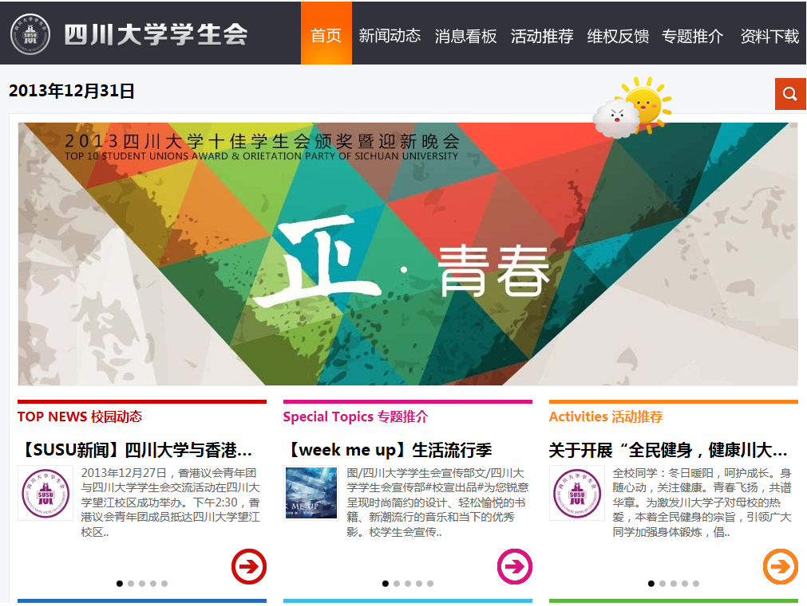

- 首页
- 团委介绍
- 团内档案
- 学生组织
- 办事指南
- 活动通知


四川大学学生会（英文 Students' Union，Sichuan University，简称SUSU）是中共四川大学委员会领导和共青团四川大学委员会具体指导下的学生群众组织。学生会承认《中华全国学生联合会章程》、《四川省学生联合会章程》和《成都市学生联合会章程》，并作为团体会员参加中华全国学生联合会、四川省学生联合会、成都市学生联合会。学生会宗旨是：坚持马克思列宁主义、毛泽东思想、邓小平理论、“三个代表”重要思想，在科学发展观的指导下，全面贯彻党的教育方针、政策，发挥联结学校和同学之间的桥梁纽带作用，全心全意为广大同学服务，坚持以全面提高同学综合素质为工作中心，为团结和引导全校同学成长为中国特色社会主义事业的建设者和接班人而努力奋斗。

四川大学学生会官方网站http://su.scu.edu.cn/